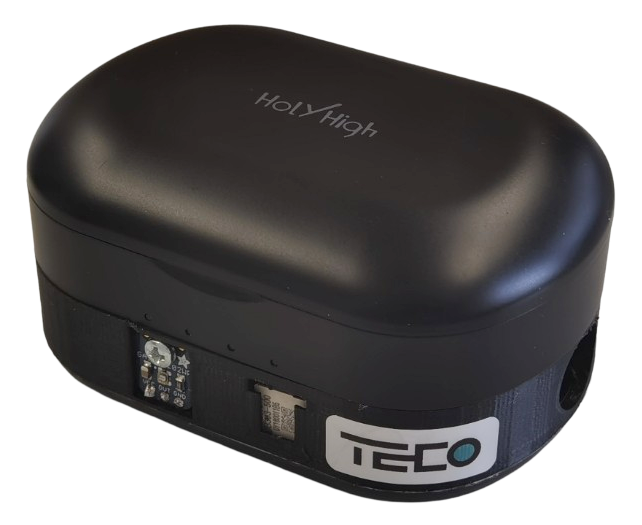
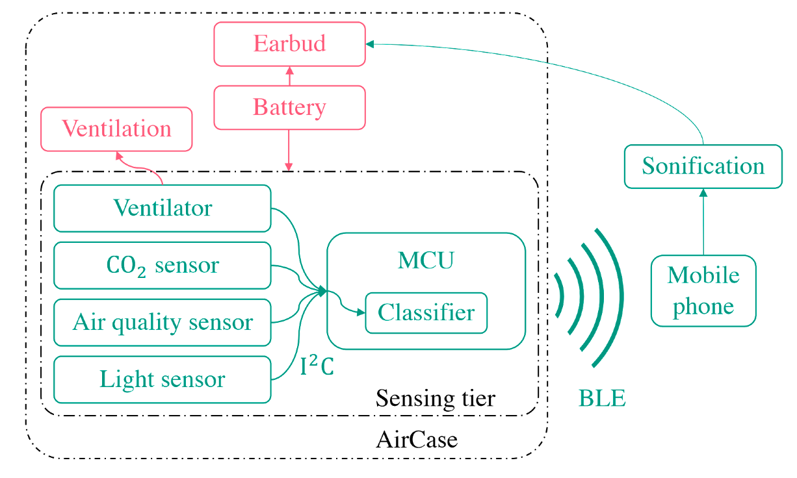

Earphones has deeply integrated to our daily life. However, the charging case of them are only used for recharging the earphones. However, this non-invasive device with abundant power can be leveraged as a portable sensor node. Thus, we present AirCase, a smart earable charging case that measures CO2, volatile organic compounds, humidity, air pressure, temperature, and light intensity. The case powers both the air quality system and the earables. We also propose a model-driven air quality soundscape sonification strategy based on the audio capabilities of the earables. AirCase detects conditions unsuitable for measuring air quality (e.g., in pocket) in an office environment at 98.2 % accuracy with a simple classifier based on a single feature.

Figure 1: Appearance of the proposed AirCase.
This small endeavor not only promotes pervasive computing and ubiquitous computing, but also aims to inspire other researchers to take full advantage of the opportunities available in their lives to advance the electronification and intellectualization.

Figure 2: System design of the AirCase.
Related Materials
H. Zhaoet al. Aircase: Earable Charging Case with Air Quality Monitoring and Soundscape Sonification. In Proceedings of the 2021 ACM International Conference on Ubiquitous Computing, 2021.
[PDF][Slide][Github][YouTube]
T. Röddiger et al. Sensing with Earables: A Systematic Literature Review and Taxonomy of Phenomena. Proceedings of the ACM on Interactive, Mobile, Wearable and Ubiquitous Technologies 6.3 (2022): 1-57.
[PDF]